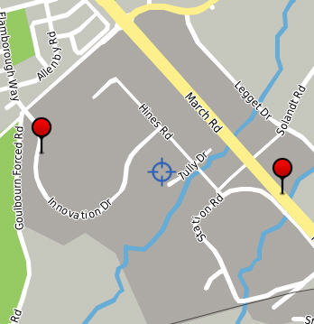
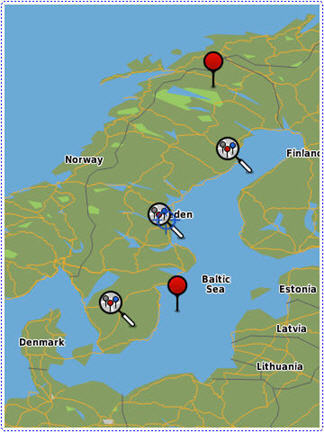

|
|||||||||
| PREV NEXT | FRAMES NO FRAMES | ||||||||
This category contains the packages that you can use to develop LBS applications for the BlackBerry® device.
For more information about LBS, visit www.blackberry.com/go/devguides to read the BlackBerry Java Application Location-Based Services Development Guide. For additional resources, visit www.blackberry.com/developers.
You can retrieve location information for a BlackBerry device by using one of the following services:
Packages: javax.microedition.location, net.rim.device.api.gps
You can retrieve GPS location information by using the JSR 179 Location API in the javax.microedition.location package or the BlackBerry extensions to JSR 179 in the net.rim.device.api.gps package. The following table lists the functionality that each package provides and the BlackBerry device that the packages supports:
| JSR 179 | BlackBerry extensions to JSR 179 |
|---|---|
|
|
| Supported on BlackBerry devices that run BlackBerry® Device Software 4.0.2 or later | Supported on BlackBerry devices that run BlackBerry Device Software 5.0 or later |
When you use the JSR 179 Location API to retrieve the location of a BlackBerry device, a single location request returns a Location object that is provided by an instance of the LocationProvider class. The GPS mode that the LocationProvider uses to retrieve the location is specified in an instance of the Criteria class.
When you use the BlackBerry extensions to JSR 179 to retrieve the location of a BlackBerry device, a single location request returns a BlackBerryLocation object that is provided by an instance of the BlackBerryLocationProvider class. The GPS mode that the BlackBerryLocationProvider uses to retrieve the location is specified in an instance of the BlackBerryCriteria class.
Retrieving the location of a BlackBerry device involves the following steps:
Step 1: Specify the GPS mode.
Click for code sample: Specifying the GPS mode
/* JSR 179 */
Criteria myCriteria = new Criteria();
/* JSR 179 extension */
BlackBerryCriteria myBlackBerryCriteria = new BlackBerryCriteria(…); |
Step 2: Retrieve a location provider.
Click for code sample: Retrieving a location provider
/* JSR 179 */
LocationProvider myProvider = LocationProvider.getInstance(myCriteria);
/* JSR 179 extension */
BlackBerryLocationProvider myBlackBerryProvider =
(BlackBerryLocationProvider) LocationProvider.getInstance(myBlackBerryCriteria); |
Step 3: Request a single GPS fix or multiple GPS fixes.
Click for code sample: Requesting a single GPS fix or multiple GPS fixes
/*
* Single location fix
*/
/* JSR 179 */
Location myLoc = myProvider.getLocation(…);
/* JSR 179 extension */
BlackBerryLocation myBlackBerryLoc = myBlackBerryProvider.getLocation(…);
/*
* Continuous location fixes
*/
/* JSR 179 */
myProvider.setLocationListener(…);
/* JSR 179 extension */
myBlackBerryProvider.setLocationListener(…); |
Step 4: Retrieve the location of a BlackBerry device.
Click for code sample: Retrieving the location of a BlackBerry device
/* JSR 179 */
double lat = myLoc.getQualifiedCoordinates().getLatitude();
double lng = myLoc.getQualifiedCoordinates().getLongitude();
double alt = myLoc.getQualifiedCoordinates().getAltitude();
/* JSR 179 extension */
double lat = myBlackBerryLoc.getQualifiedCoordinates().getLatitude();
double lng = myBlackBerryLoc.getQualifiedCoordinates().getLongitude();
double alt = myBlackBerryLoc.getQualifiedCoordinates().getAltitude(); |
You can use the BlackBerry extensions to JSR 179 to retrieve additional information that is used to find the location of the BlackBerry device, such as
Click for code sample: Determining satellite information
// The following code sample demonstrates how to request a location fix
// and then determine the current number of satellites in view, tracked
// satellites, average satellite signal quality, GPS data source
// (internal GPS receiver or external Bluetooth® GPS receiver), and the GPS mode.
import java.util.*;
import net.rim.device.api.gps.*;
import javax.microedition.location.*;
public class handleGPS
{
static GPSThread gpsThread;
static int satCount;
static int signalQuality;
static int dataSource;
static int gpsMode;
public handleGPS()
{
gpsThread = new GPSThread();
gpsThread.start();
}
private static class GPSThread extends Thread
{
public void run()
{
try
{
BlackBerryCriteria myCriteria =
new BlackBerryCriteria(GPSInfo.GPS_MODE_AUTONOMOUS);
try
{
BlackBerryLocationProvider myProvider =
(BlackBerryLocationProvider)
LocationProvider.getInstance(myCriteria);
try
{
BlackBerryLocation myLocation =
(BlackBerryLocation)myProvider.getLocation(300);
satCount= myLocation.getSatelliteCount();
signalQuality =
myLocation.getAverageSatelliteSignalQuality();
dataSource = myLocation.getDataSource();
gpsMode = myLocation.getGPSMode();
SatelliteInfo si;
StringBuffer sb = new StringBuffer("[Id:SQ:E:A]\n");
String separator = ":";
for (Enumeration e = myLocation.getSatelliteInfo();
e!=null && e.hasMoreElements(); )
{
si = (SatelliteInfo)e.nextElement();
sb.append(si.getId() + separator);
sb.append(si.getSignalQuality() + separator);
sb.append(si.getElevation() + separator);
sb.append(si.getAzimuth());
sb.append('\n');
}
}
catch ( InterruptedException iex )
{
return;
}
catch ( LocationException lex )
{
return;
}
}
catch ( LocationException lex )
{
return;
}
}
catch ( UnsupportedOperationException uoex )
{
return;
}
return;
}
}
} |
A BlackBerry device, depending on the model and the wireless service provider, supports all or a subset of the following GPS modes.
On BlackBerry devices that operate on GSM® networks, the autonomous mode is supported. Assisted GPS fixes that use the SUPL standard are supported for BlackBerry devices that run BlackBerry Device Software 4.6 and later and have the service provisioned by the wireless service provider. In BlackBerry Device Software 5.0 and later, the cellsite mode is supported.
On BlackBerry devices that operate on CDMA networks, all the following modes are supported, however, not all modes are supported by wireless service providers. You should confirm with the wireless service provider which modes are supported.
| GPS mode | Description |
|---|---|
| autonomous |
|
| assisted |
|
|
cellsite |
|
| MS-based |
|
| MS-assisted |
|
| speed optimal |
|
| accuracy optimal |
|
| data optimal |
|
For more information about GPS support and designing GPS applications for the BlackBerry devices, search the BlackBerry Development Knowledge Base at http://www.blackberry.com/go/developerkb.
Packages: net.rim.device.api.gps
The geolocation service provides an approximate location (200 meters to 5 kilometers) of the BlackBerry device and includes the latitude, longitude, and horizontal accuracy based on the positioning of cell towers and WLAN access points. You do not require GPS technology on the device to use the geolocation service. You can use geolocation for applications that require an approximate location and that can be used indoors (for example, applications that recommend local points of interest).
With BlackBerry® Java® SDK 6.0 and later, you can specify one of the following modes that are provided in the LocationInfo class to retrieve geolocation information:
In BlackBerry® Java® Development Environment 5.0, the geolocation service provides location information using cell tower positioning. To retrieve a location using geolocation, you can specify GPSInfo.GPS_MODE_CELLSITE as the mode.
The basic steps to retrieve the geolocation of a BlackBerry device are very similar to the steps used to retrieve the GPS location.
Step 1: Specify the geolocation mode.
Click for code sample: Specifying the geolocation mode
BlackBerryCriteria myBlackBerryCriteria = new BlackBerryCriteria(LocationInfo.GEOLOCATION_MODE); |
Step 2: Retrieve a location provider.
Click for code sample: Retrieving a location provider
BlackBerryLocationProvider myBlackBerryProvider =
(BlackBerryLocationProvider)LocationProvider.getInstance(myBlackBerryCriteria); |
Step 3: Request a single geolocation fix or multiple geolocation fixes.
Click for code sample: Requesting a single geolocation fix or multiple geolocation fixes
/* Single location fix */
BlackBerryLocation myBlackBerryLoc = myBlackBerryProvider.getLocation(timeout);
/* Multiple location fixes */
myBlackBerryProvider.setLocationListener(…); |
Step 4: Retrieve the geolocation of a BlackBerry device.
Click for code sample: Retrieving the geolocation of a BlackBerry device
double lat = myBlackBerryLoc.getQualifiedCoordinates().getLatitude();
double lng = myBlackBerryLoc.getQualifiedCoordinates().getLongitude();
double alt = myBlackBerryLoc.getQualifiedCoordinates().getAltitude(); |
Packages: net.rim.device.api.lbs, javax.microedition.location
The net.rim.device.api.lbs.Locator API, available in BlackBerry Java Development Environment 5.0 or later, provides the geocoding methods that you can use to request geospatial coordinates for a street address. It also provides the reverse geocoding methods that you can use to request a street address for geospatial coordinates.
You can use the geocode() method to request geospatial coordinates. A successful request returns an array of Landmark objects. A Landmark object can contain a display label name, a description, the geospatial coordinates, and a street address. You can use the reverseGeocode() methods to request an approximate address, city, province/state or country information. A successful request returns an array of Landmark objects.
Requests for geocoding and reverse geocoding information are synchronous and can be interrupted. A BlackBerry device application can use the Locator class to make only one request at a time.
Your application must invoke geocode() and reverseGeocode() outside of the event dispatch thread. Each request is sent to the BlackBerry® Infrastructure. If a request is made on the event dispatch thread, it is denied and results in a IllegalThreadStateException. If a request is unsuccessful, a LocatorException is thrown with an error code that indicates why the request is unsuccessful. If a request fails or stalls at the transport level, it is cancelled as specified by the value for REQUEST_TIMEOUT.
The BlackBerry device does not cache requests.
Click for code sample: Retrieving a street address by using reverse geocoding
import net.rim.device.api.lbs.*;
import javax.microedition.location.*;
public class myReverseGeocode
{
private Thread reverseGeocode;
public myReverseGeocode()
{
reverseGeocode = new Thread(thread);
reverseGeocode.setPriority(Thread.MIN_PRIORITY);
reverseGeocode.start();
}
Runnable thread = new Runnable()
{
public void run()
{
AddressInfo addrInfo = null;
int latitude = (int)(45.423488 * 100000);
int longitude = (int)(-80.32480 * 100000);
try
{
Landmark[] results = Locator.reverseGeocode
(latitude, longitude, Locator.ADDRESS );
if ( results != null && results.length > 0 )
addrInfo = results[0].getAddressInfo();
}
catch ( LocatorException lex )
{
}
}
};
} |
After you retrieve the location for a BlackBerry device, you can display the location information by using BlackBerry Maps® or by using custom maps.
Packages: net.rim.blackberry.api.invoke, net.rim.blackberry.api.maps, net.rim.blackberry.api.menuitem, net.rim.device.api.lbs
You can create an application that interacts with BlackBerry Maps. BlackBerry Maps is a map and location application that can display a map, the location of the BlackBerry device, a route from a starting location to a specific ending location, and points of interest on a map.
BlackBerry Maps can be installed on BlackBerry devices that are running BlackBerry Device Software 4.2 or later.
Your application can interact with BlackBerry Maps in the following ways:
You can invoke BlackBerry Maps by using the Invoke.invokeApplication() method. You can use the MapsArguments parameters to specify that when BlackBerry Maps opens it displays a map with the location of a contact's address, the location for a landmark, the location of specific coordinates, a location using a location document, or a location using local search information.
When you invoke BlackBerry Maps, your application passes control to the BlackBerry Maps application. For information about invoking applications, see Application Integration.
Click for code sample: Invoking BlackBerry Maps by using a local search
import net.rim.blackberry.api.invoke.*; public class invokeMaps |
You can invoke BlackBerry Maps to display map locations and routes by passing in a location document. A location document is a String object that contains XML elements with attributes that can specify the location and route information. The XML elements that you can use include <lbs>, <getRoute> and <location>.
Click for code sample: Displaying a route by using a location document
import net.rim.blackberry.api.invoke.*;
public class invokeMaps
{
public invokeMaps ()
{
String document = "<lbs id='WatRoute'><getRoute>
<location x='-8052237' y='4346518'
label='Waterloo, ON' description='Waterloo, Ontario, Canada' />
<location x='-7569792' y='4542349'
label='Ottawa, ON' description='Ottawa, Ontario, Canada' />
</getRoute></lbs>";
Invoke.invokeApplication(Invoke.APP_TYPE_MAPS, new MapsArguments
(MapsArguments.ARG_LOCATION_DOCUMENT, document));
}
} |
You can add a menu item to the menu of BlackBerry Maps by using the ApplicationMenuItem class and registering the ApplicationMenuItem with the ApplicationMenuItemRepository class (type MENUITEM_MAPS). When you register the menu item, you must use an instance of the ApplicationDescriptor class. When your ApplicationMenuItem is invoked, your application is passed a MapView context object.
For more information about menu items, visit www.blackberry.com/go/devguides to read the BlackBerry Java Application UI and Navigation Development Guide.
Packages: net.rim.device.api.lbs.maps, net.rim.device.api.lbs.maps.model, net.rim.device.api.lbs.maps.ui, net.rim.device.api.lbs.maps.utils
You can use the MapField class and the RichMapField that are provided in the net.rim.device.api.lbs.maps.ui package to display a map. These classes are available in BlackBerry Java SDK 6.0 and later.
Note: The MapField class in the net.rim.device.api.lbs package is deprecated in BlackBerry Java SDK 6.0 and later.
The MapField class provides the following features:
The RichMapField class extends the functionality of the MapField class and provides the following customization features:
The MapDataModel class represents a container that you can use to store information about a location. Using the MapDataModel, you can specify tags for a location (for example, "work"), and specify whether the location is visible. The following image shows a map field with two visible, tagged locations:

Click here for a code sample: Adding a map with tagged locations
// create a RichMapField and use its MapDataModel for mappable management
RichMapField map = MapFactory.getInstance().generateRichMapField();
add(map);
MapDataModel data = map.getModel();
// create Andrea's Home and Work locations
MapLocation andreaHome = new MapLocation( 45.32503, -75.91334, "Andrea - Home", null);
MapLocation rimMarch = new MapLocation( 45.34154, -75.91484, "RIM - March", null);
// add Andrea's home and work with tags "andrea", "home" and "work"
// this adds Andrea's home location and tags it "andrea"
int andreaHomeId = data.add( andreaHome, "andrea");
// this ID is used for direct access of data within this container
// allowing the addition of a second tag to a single piece of data
data.tag(andreaHomeId, "home");
// this adds andrea's work and tags it "andrea"
int rimMarchId = data.add( rimMarch, "andrea");
// ... and this tags it "work"
data.tag( rimMarchId, "work");
//create Mike's home location and add it with appropriate tags
MapLocation mikeHome = new MapLocation( 45.73471, -75.92935, "Mike - Home", null);
int mikeHomeId = data.add( mikeHome, "mike");
data.tag( mikeHomeId, "home");
// Mike also works at RIM March, so tag it with "mike"
data.tag( rimMarchId, "mike");
// Andrea, Mike's wife, lives at the same home location as Mike, but
// works at a different work location
data.tag( mikeHomeId, "andrea");
MapLocation rimInnovation = new MapLocation( 45.34332, -75.92992, "RIM - Innovation", null);
int rimInnovationId = data.add(rimInnovation, "andrea");
data.tag(rimInnovationId, "work");
// At this point, there are 4 visible locations in the data container,
// each tagged with at least one items of information.
// To see all of the locations
map.getMapField().update(true);
//To show only items that are tagged "work", turn everything invisible
data.setVisibleNone();
//... and set items tagged "work" as visible
data.setVisible( "work");
// the map will automatically update at this point, but the screen may not
// be "efficient". To recenter and change the zoom so that the data fills
// the screen...
map.getMapField().update(true);
|
You can create a static image of a map by using one of the following methods:
Click for code sample: Creating a static image of a map
// Create a model and add the data to the model
MapDataModel data = new MapDataModel();
MapLocation andrew = new MapLocation( 45.42100, -75.69100, "Andrew", null );
data.add( andrew );
data.add( new MapLocation( 45.42200, -75.69200, "Mike", null ) );
data.add( new MapLocation( 45.42100, -75.69200, "Lisa", null ) );
// For Greg's location, "false" indicates the location is not visible
data.add( new MapLocation( 45.42200, -75.69100, "Greg", null), null, false );
// Set the image size, map center (Andrew's location) and zoom level
MapDimensions dim = new MapDimensions( 200, 100 );
dim.setCentre( andrew );
dim.setZoom( 3 );
// Create the image
Bitmap map = MapFactory.getInstance().generateStaticMapImage( dim, data );
|
Keyhole Markup Language (KML) documents are XML-based documents that you can use to store geographic information about places, buildings, points of interest, cycle paths, pictures, and so on. You can create and publish a KML document to a web site. To display the KML data in a map field, specify the URL of the KML document by using the MapFactory.populateDataModelFromKmlUrl(MapDataModel model, String url, String tag) method. KML data displays only if the KML document is retrieved through the BlackBerry® Internet Service or the BlackBerry® Enterprise Server (for example, a KML document that is stored on a public web site or on an intranet site). KML documents stored on the BlackBerry device (for example, on a microSD card) cannot be displayed.
The following example uses a KML document to display location information about universities in Sweden.

Click for code sample: Displaying a KML overlay
// constants
String suTag = "swedish universities";
String suUrl = "http://www.example.com/su.kml";
// generate the map field
RichMapField view = MapFactory.getInstance().generateRichMapField();
// retrieve the KML file and populate the data model
MapDataModel model = view.getModel();
MapFactory.getInstance().populateDataModelFromKmlUrl(model, suUrl, suTag );
// show only the universities and make that the map center
model.setVisibleNone();
model.setVisible( suTag );
view.getMapField().update( true ); |
You can create a location picker dialog box that allows a user to choose a location from a list you define, such as the following selections:
You can define the location picker dialog box by using the Location Picker API provided in the net.rim.device.api.lbs.picker package. The location is passed using a javax.microedition.location.Landmark object.
For more information about picker dialog boxes, visit www.blackberry.com/go/devguides to read the BlackBerry Java Application UI and Navigation Development Guide.
Packages: net.rim.device.api.lbs.travel
You can retrieve the estimated time and distance it takes to travel between two points on a given date and at a given time. Currently, the Travel Time API provides estimates only for automobile travel in the United States and Canada.
To request a travel time estimate, retrieve an instance of the TravelTimeEstimator class. Use the requestArrivalEstimate() method and specify the coordinates for the starting and ending locations, and the starting time. The request is forwarded to a Travel Time server, which identifies a route between the starting and ending locations and uses live and historical traffic information to calculate a travel time estimate. The estimate reflects the known conditions on the specified date and at the specified time. The travel time estimate is returned by the TravelTimeEstimator using an instance of the TravelTime class.
Click for code sample: Estimating the travel time
public class MyClass {
...
public void findTravelTime() {
...
// Obtain the coordinates for the current location
LocationProvider provider = LocationProvider.getInstance(null);
if (provider == null) {
throw new IllegalStateException("no LocationProvider available");
}
Coordinates endPoint = provider.getLocation(-1).getQualifiedCoordinates();
// Obtain the travel time between the two points
TravelTimeEstimator estimator = TravelTimeEstimator.getInstance();
try {
estimator.requestArrivalEstimate(start, end, TravelTime.START_NOW,
null, new TravelTimeListener() {
public onSuccess(TravelTime travelTime) {
// If you need to interact with the event thread
// (e.g. updating a LabelField), use invokeLater or
// invokeAndWait.
Application.getApplication().invokeLater(new Runnable() {
public void run() {
// Do something with the travel time estimate.
...
}
});
}
public onFailure(TravelTimeException e) {
// If you need to interact with the event thread
// (e.g. displaying an error dialog), use invokeLater
// or invokeAndWait.
Application.getApplication().invokeLater(new Runnable() {
public void run() {
// Handle the error.
...
}
});
}
});
} catch (TravelTimeException e) {
// Handle the error.
...
}
}
...
} |
|
Copyright 1999-2011 Research In Motion Limited. 295 Phillip Street, Waterloo, Ontario, Canada, N2L 3W8. All Rights Reserved. |
Legal |